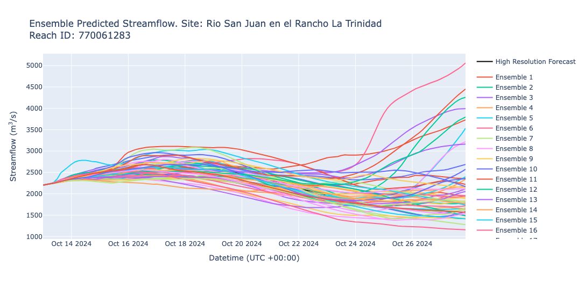

Términos y Vocabulario
- IFS: Sistema Integrado de Predicción (Integrated Forecast System). Nombre del modelo acoplado de meteorología y superficie terrestre utilizado para generar los forzamientos en los resultados de RFS.
Visión General
RFS produce predicciones de caudal en forma de ensambles utilizando datos IFS del ECMWF. Las predicciones diarias se calculan en el centro de supercomputación del ECMWF en Bolonia, Italia, y están disponibles a las 12:00 PM UTC. Los caudales se reportan en metros cúbicos por segundo. La predicción tiene un paso temporal de 3 horas, donde cada valor de caudal representa el promedio del caudal ocurrido en el río durante las 3 horas anteriores. A continuación, se muestra un gráfico de ejemplo con todos los miembros del ensamble.

Cada predicción incluye un ensamble de 50+1 miembros, lo que significa que hay 1 predicción base (control) y 50 perturbaciones (variaciones leves) de la condición base.
La predicción de cada día se inicializa utilizando el valor promedio de 24 horas de los miembros del ensamble del día anterior como condición inicial. Los datos de IFS tienen una resolución espacial de aproximadamente 9 kilómetros horizontales en el ecuador. La malla de valores de escorrentía de IFS se asigna a las cuencas de RFS usando métodos de estadísticas zonales en SIG.
| Propiedad del Modelo | Simulación Retrospectiva |
|---|---|
| Fecha más temprana | 01 Julio 1940 |
| Tipo de Simulación | Ensamble |
| Miembros del Ensamble | 50+1 |
| Tiempo de Pronóstico | 15 Días |
| Paso Temporal | Promedio cada 3 horas |
| Frecuencia de Actualización | Diario a las 00:00 UTC |
| Descarga Masiva Disponible | Sí |
| Consulta y Subconjunto | Sí |
Interpretación de una Predicción por Ensamble
Cada miembro del ensamble tiene la misma probabilidad de ocurrir. Por lo tanto, las predicciones se comprenden mejor observando resúmenes del ensamble en lugar de miembros individuales.
Los gráficos de predicción están diseñados para ayudar a los usuarios a interpretar el rango de posibles resultados e incertidumbres. El gráfico más común incluye la mediana, el percentil 20 y el percentil 80. Estos representan el 60% de la distribución de probabilidad dentro de los miembros del ensamble y brindan una idea de la posible variabilidad del caudal futuro. Este enfoque permite a los usuarios ver el rango de escenarios probables para sus ríos.
En el siguiente gráfico de predicción de ejemplo, hay 3 elementos clave a observar:
- Línea Negra: La mediana de los 51 miembros del ensamble. Es la "mejor estimación" del caudal del río.
- Líneas Azules: Los valores del percentil 20 y 80.
- Área Sombreada Azul: Representa la incertidumbre en la predicción. Es el 60% medio del ensamble. Cuanto más estrecha sea la región azul, mayor será la confianza del modelo. Es más probable que el caudal real se encuentre dentro del área sombreada azul.